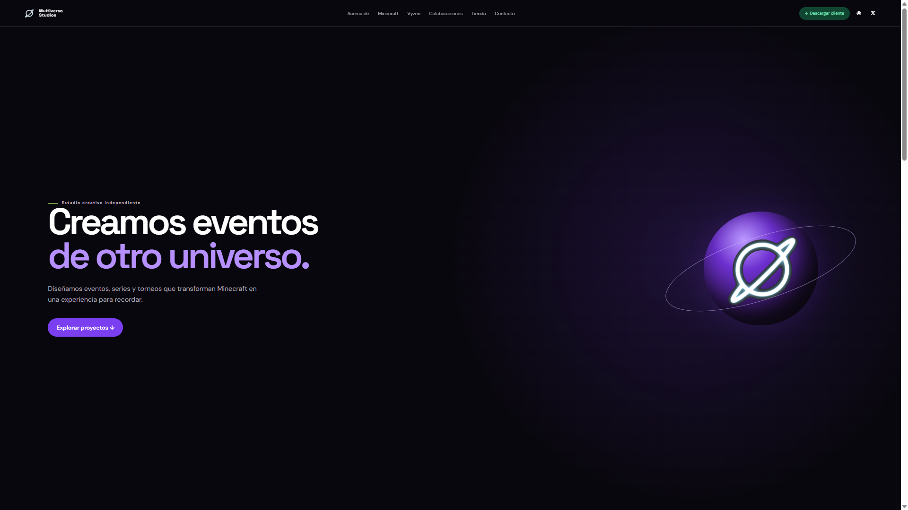

ExtraYP
Ex moderador · soporte y moderación de comunidad.
Soy Christian, estudiante de Ingeniería en Software en Hybridge Education. Desarrollo proyectos web y software, y complemento mi trabajo técnico con diseño gráfico y experiencia en comunidades digitales.
01 / SOBRE MÍ
Soy estudiante de Ingeniería en Software en Hybridge Education. Mi enfoque actual está en fortalecer mis bases de programación y desarrollar proyectos propios de software y web.
También tengo experiencia en diseño gráfico y gestión de comunidades. Este portafolio documenta proyectos reales, colaboraciones y mi evolución profesional conforme incorporo nuevas tecnologías.
02 / EXPERIENCIA
Dirección · Diseño
Desarrollo · Comunidades
Dirección del estudio y desarrollo de su presencia digital. Mi trabajo se concentra principalmente en diseño gráfico, identidad visual y contenido, además de programación básica para la web y herramientas sencillas.
CON QUIÉN HE TRABAJADO
Ex moderador · soporte y moderación de comunidad.
Diseñador · apoyo en piezas y contenido visual.
03 / PROYECTOS
2 actuales
2 próximos

Aplicación de punto de venta para operación, cliente, jornadas, tickets y reportes.
Nuevo proyecto que se añadirá al portafolio al comenzar su desarrollo.
Primer proyecto orientado a modding y contenido para Minecraft.
04 / QUÉ PUEDO OFRECER
Servicios acordes con mi experiencia actual. Las capacidades en desarrollo están indicadas como próximas.
Diseño y desarrollo de sitios web informativos y portafolios con una identidad visual personalizada.
Apoyo a comunidades de Discord mediante atención a usuarios, moderación y soporte básico.
Desarrollo de mods y contenido personalizado para Minecraft conforme avance mi formación.
05 / HERRAMIENTAS
La lista se actualiza conforme incorporo nuevas tecnologías a proyectos reales.
06 / HABLEMOS
Proyectos, colaboraciones, soporte o consultas. Puedes escribirme por el medio que prefieras.